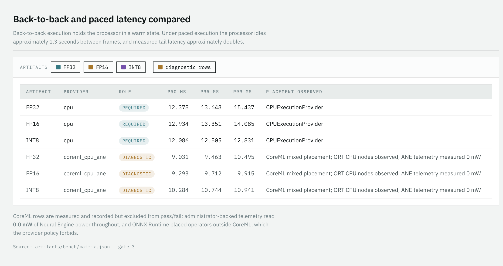
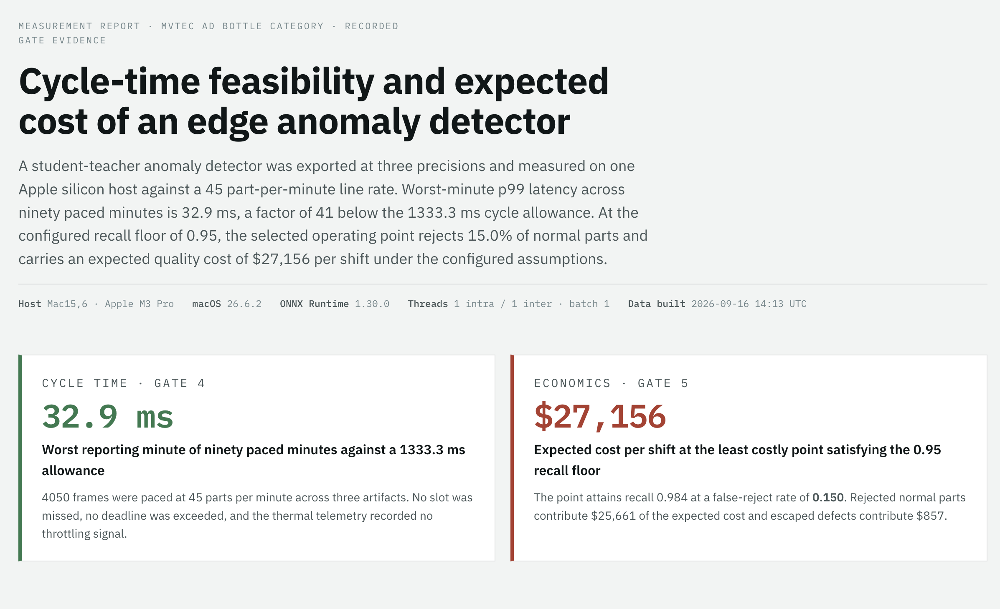

Manufacturers need to catch defects at production speed while controlling inspection cost.
A factory loses money when a defective part reaches a customer. It also loses money when inspection rejects a good part. The inspection system must balance these errors while keeping up with the production line.
A defective part escapes.
The manufacturer may pay for warranty claims, returns, replacement parts, or customer failures. The model must catch enough defects to control that risk.
A good part gets rejected.
The manufacturer wastes material, labor, and production capacity. The decision threshold must limit unnecessary scrap and rework.
Inspection falls behind.
The station misses its cycle deadline or slows production. The model must sustain the target of 45 parts per minute on the actual inspection hardware.
The business question asks which inspection model and decision threshold catch enough defects, keep up with the line, and produce the lowest expected cost per shift.
This project demonstrates how an engineer answers that question with measured accuracy, local latency, sustained throughput, and configured economic assumptions. A potential customer would buy a validated inspection deployment for their parts, cameras, and production line. Customer data and station testing must establish its business value.
The measurements come from an Apple M3 Pro, model Mac15,6, running macOS 26.6.2 with ONNX Runtime 1.30.0. The source records are Gate 3 and Gate 4.
We built the pipeline in acceptance gates.
The Python 3.12 project uses uv, PyTorch, torchvision, ONNX, ONNX Runtime, NumPy, and pytest. A frozen MobileNetV3 Small teacher supplies features, and a student learns those features from defect-free training images. Their normalized differences produce the anomaly map and image score.
- Gate 0 verifies the dataset. Passed We verify the approved archive digest, reject unsafe extraction paths, check all fifteen categories, assert normal-only training data, and validate image and mask geometry. The source dataset contains 3,629 training images, 1,725 test images, and 1,258 masks. Read the verification record.
- Gate 1 trains and evaluates FP32. Passed We train on the bottle category and report image and pixel AUROC. The threshold is frozen from held-out normal training images before test evaluation. Its recall is 0.904762, below the later 0.95 operating-point requirement. Read the model results.
- Gate 2 produces and verifies precision variants. Passed Initial reduced-precision attempts failed. Validation-only diagnosis led to mixed variants that convert 36 of 104 convolution nodes. Each final artifact receives one complete test evaluation; cached FP32 results are reused. Read the export results.
- Gate 3 measures every provider pair. Passed under revised scope Each row discards exactly 20 warmups and retains 500 timed batch-one completions. The timer includes preprocessing, synchronous inference, and postprocessing on already decoded images. CPU is required; CoreML is diagnostic. Read the provider decision.
- Gate 4 measures sustained CPU performance. Passed Each required precision runs for 30 minutes at 45 parts per minute. The runner records raw samples, per-minute tails, pacing, and deadline misses. Read the sustained results.
- Gate 5 selects a retrospective cost point. Passed for research The cost rule sweeps 242 cached test thresholds and selects INT8 on CPU. The selection uses configured economic assumptions and meets the research recall and sustained-latency requirements. Read the scorecard.
We measured the required CPU configurations locally.
The line target allows 1,333.333 milliseconds per part. The following values come directly from the current Gate 3 latency report. FP16 and INT8 describe mixed serialized graphs; they do not imply that every runtime operator uses that precision.
| Artifact | p50 ms | p95 ms | p99 ms | Capacity from p99 parts/min | Image AUROC | Pixel AUROC | Frozen-threshold recall |
|---|---|---|---|---|---|---|---|
| FP32 | 12.378 | 13.648 | 15.437 | 3886.77 | 0.981746 | 0.959094 | 0.904762 |
| Mixed FP16/FP32 | 12.934 | 13.351 | 14.085 | 4259.89 | 0.980952 | 0.959086 | 0.904762 |
| Mixed INT8/FP32 | 12.086 | 12.505 | 12.831 | 4676.06 | 0.980159 | 0.958930 | 0.904762 |
Capacity from p99 is a derived service-time proxy. Gate 4 supplies the separate measured paced-throughput result. All accuracy figures in this table use the original frozen threshold.
| Artifact | Minute 1 p99 ms | Minute 25 p99 ms | Worst-minute p99 ms | Achieved parts/min | Deadline misses |
|---|---|---|---|---|---|
| FP32 | 25.885 | 30.712 | 31.073 | 45.000 | 0 |
| Mixed FP16/FP32 | 30.774 | 29.605 | 32.889 | 45.000 | 0 |
| Mixed INT8/FP32 | 27.803 | 28.615 | 29.778 | 45.000 | 0 |
Each reported minute contains 45 samples. Its empirical p99 is a noisy tail estimate. The telemetry recorded no throttling signal; the workstation did not record ambient temperature or representative enclosure conditions.
We investigated the accelerator failure and recorded its limits.
We tested alternate CoreML conversion and graph boundaries. FP16 Neural Engine execution failed anomaly-map parity, and ONNX Runtime 1.30 rejected the INT8 graph for complete CoreML placement. The current diagnostic rows still contain ORT CPU fallback. ADR 0006 records the investigation, and ADR 0007 records the accepted CPU-only qualification scope.
The earlier failed Gate 3 records remain preserved. The later pass reflects a documented scope decision, rather than successful ANE qualification. An accelerator requirement would need a new decision and compatible exports with measured placement and passing parity.

We selected INT8 on CPU for a retrospective research scenario.
The cost rule selects INT8.
0.984127Recall at the retrospectively selected threshold of 2.089220.The model predicts quality cost.
$27,155.66Expected cost per shift under configured illustrative assumptions.The comparison has equal cost.
$0.00The expected difference from the maximum-F1 point is zero.Gate 5 uses a configured 1% defect prevalence and 21,600 parts per shift. A false accept incurs the configured warranty cost, a false reject incurs scrap cost, and a true reject incurs rework cost. These assumptions come from config/costs.yaml; the MVTec test ratio does not supply factory prevalence.

We added a read-only surface for reviewing evidence.
The local evidence dashboard displays recorded gate values, latency, cost curves, and failure modes. ADR 0008 restricts it to reading evidence. It does not trigger gates, edit measurements, call an LLM, or control a production station.

The remaining work qualifies a real inspection station.
- The project needs customer-owned or appropriately licensed data and independent validation of the selected threshold.
- The station needs measured camera acquisition, transport, and actuation overhead in its full cycle budget.
- The deployment needs representative enclosure and ambient conditions, longer shift-soak acceptance, and documented customer recall uncertainty.
- The release needs an authorized signed manifest, a verified rollback path, and explicit acceptance evidence.
- An ANE requirement needs new compatible exports and passing placement and numerical parity checks.
MVTec AD is licensed under CC BY-NC-SA 4.0 for noncommercial research. The repository does not distribute dataset images or trained weights. The production plan records the commercial extension.
The source records preserve the decisions and results.
- Gate 0 verifies the dataset.
- Gate 1 records FP32 training and evaluation.
- Gate 2 records export parity and accuracy.
- Gate 3 records measured provider rows.
- Gate 4 records sustained runs.
- Gate 5 records the cost selection.
- The evaluation ledger records exactly-once runs.
- The operating contract defines evidence requirements.